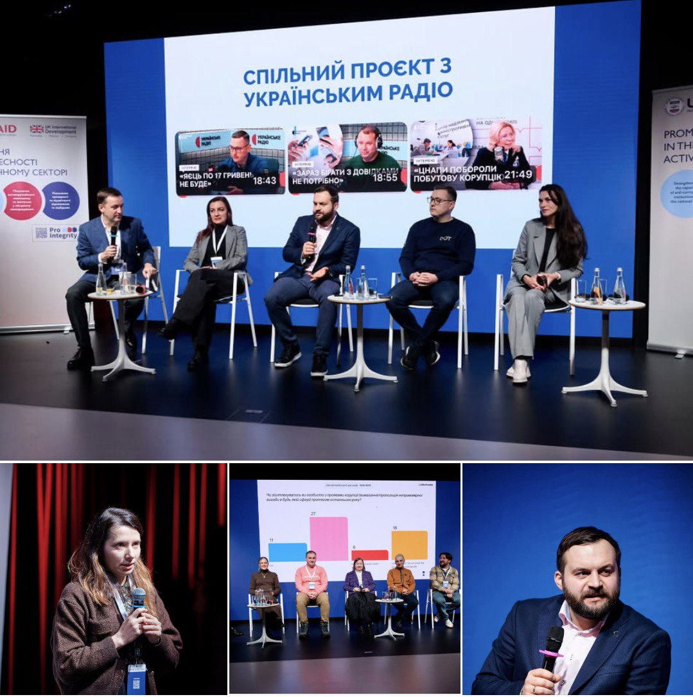
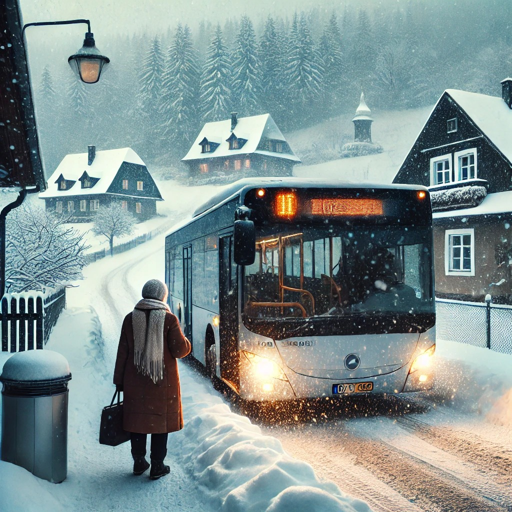

Лібералізація = Монополізація 01.09.2025
Liberalization = Monopolization 01.09.2025
Злочинна монополізація прибуткових маршрутів в Україні під виглядом лібералізації за кошти європейських платників податків. Зміна влади в Україні не вплинула на постійні "успішні" спроби кримінального бізнесу виокремити прибуткову частину автобусних маршрутів громадського транспорту всупереч Регламенту ЄС 1370, який вже мав би бути імплементований в українське законодавство. Крайній термін минув 1 вересня 2025 року.
Criminal monopolization of profitable routes in Ukraine under the guise of liberalization, funded by European taxpayers. The change of power in Ukraine has not affected the ongoing “successful” attempts of the criminal business sector to isolate the profitable segments of public bus routes — in direct violation of EU Regulation 1370, which should already have been implemented into Ukrainian legislation. The final deadline passed on September 1, 2025.
Імітаційна доброчесність та реальна корупція
Imitation Integrity and Real Corruption
Імітаційна доброчесність та реальна корупція
____________________________
Життєвий анекдот:
- Ти читав на сторінці Укртрансбезпеки, фахівці антикорупційних організацій стверджують, що корупції в керівництві ДСБТ не було і стало ще менше.
- А люди скаржаться на масштабну корупцію, прописану навіть в нормативних актах.
- Так. Але ж люди не фахівці в антикорупційній діяльності.
Транспортна спільнота звернула увагу на новий тренд керівництва ДСБТ – постійна участь у заходах грантових проектів, які проводять громадські організації. Замість виконання своїх функціональних обов’язків відповідно до «Положення про ДСБТ», посадовці в робочий час займаються створенням імітації доброчесності.
Чи є питання до цих громадських організацій? Ні. Вони відпрацьовують отримані кошти та створюють картинку для звітів. Ще менше питань до донорів. Їх гроші — їх рішення. Достатньо імітаційних картинок — їх проблеми.
А от питання є до тих, хто спрямовує і координує діяльність ДСБТ.
Хоча, ні. Є питання і до деяких громадських організацій, з яких створено так звану раду доброчесності. Адже мета створення цієї «Ради доброчесності» задекларована антикорупційна. І критерієм відбору організацій нібито був досвід в антикорупційній діяльності.
Ми зацікавились не тільки способом формування антикорупційної ради, а й корупційною діяльністю окремих її членів. Це надалі, а сьогодні фотоколаж «Імітація-Дійсність»
На фото 1 — участь керівника ДСБТ у постановочних заходах у робочий час.
На фото 2 — приклад реальної масштабної корупційної схеми, яку неможливо реалізувати без сприяння керівництва ДСБТ
Imitation Integrity and Real Corruption
____________________________
Life anecdote:
- Have you read on the Uktransbezpeka page that anti-corruption organization experts claim there was no corruption in the DGBT leadership and it has decreased even more?
- Yet people complain about widespread corruption, even embedded in regulatory acts.
- Yes. But people are not experts in anti-corruption activities.
The transportation community has noticed a new trend in the DGBT leadership – constant participation in events of grant-funded projects conducted by public organizations. Instead of fulfilling their functional duties according to the "DGBT Regulation," officials are engaged in creating an imitation of integrity during working hours.
Are there any questions for these public organizations? No. They are fulfilling the funds they received and creating a picture for reports. Even fewer questions for the donors. Their money – their decision. Enough imitation pictures – their problem.
But there are questions for those who direct and coordinate the activities of DGBT.
However, no. There are also questions for some public organizations that form the so-called Integrity Council. After all, the declared goal of creating this "Integrity Council" is anti-corruption. And the criterion for selecting organizations was supposedly experience in anti-corruption activities.
We are interested not only in how the anti-corruption council was formed but also in the corrupt activities of some of its members. More on that later, but today we have a photo collage "Imitation-Reality"
Photo 1 – participation of the DGBT head in staged events during working hours.
Photo 2 – an example of a real large-scale corruption scheme that cannot be implemented without the support of DGBT leadership.


Нелегали «в законі»?
Illegals "by Law"?
🇺🇦Нелегали «в законі»?
_______________________________
Цікавим спостереженням поділилась студентка Катерина. Нещодавно на автовокзалі вона стала свідком показової сцени. Два водії автобусів голосно сварилися. Один звинувачував іншого в тому, що той поїхав раніше за графіком і "вкрав" його пасажирів. Для більшості людей це могло здатися банальною суперечкою, але для неї, студентки-транспортниці, це показовий симптом більшої проблеми, яка руйнує нашу транспортну систему.
Фактично це була сварка легального перевізника з нелегалом. І Катя зловила себе на думці, що для більшості пасажирів це абсолютно незрозумілі поняття. Для них нелегал – це якийсь дядько, який неподалік від автовокзалу чи на виїзді з міста пошепки пропонує людям свою послугу. Звичайно і такі є. Вони теж нелегали, але саме поняття нелегальних перевізників ширше і набагато простіше у визначенні.
Люди думають, якщо у водія є ліцензія і навіть договір чи дозвіл на перевезення, то він автоматично стає легальним перевізником. Очевидно, що це не так. Ліцензія не дає права на обслуговування маршруту, а договір чітко визначає графік руху із часом руху та зупинками.
Перевезення без дозволу на визначений час за визначеним графіком руху – це і є нелегальне перевезення. А перевізник, який здійснює нелегальне перевезення – нелегал. Хто не знає про те, як перевізник із дозволом на один оборотний рейс здійснює кілька оборотів? Може, Укртрансбезпека не знає, що це нелегально, а такий перевізник – нелегал?
Все ж просто й очевидно.
Що потрібно для того, щоб прибрати нелегалів із доріг України?
Відповідь на поверхні - треба встановити контроль. Найефективніший спосіб - єдина державна система GPS-моніторингу та відповідні трекери на всі автобуси. Так усі перевізники, в тому числі нелегали та порушники, опиняться як на долоні.
Чому ж не робиться те, що очевидно навіть для студентки-транспортниці? Відповідь не менш очевидна – кошти, які не потрапляють на оновлення рухомого складу легальним перевізникам і в бюджети громад, осідають у кишенях нелегалів. А потім частина цих злочинних коштів стає корупційними, потрапляючи до кишень чиновників.
Саме тому замість реального механізму GPS-моніторингу навіть на внутрішні рейси незаконно вимагають встановлювати тахографи. Замість вивчення пасажиропотоків та оптимізації маршрутної мережі – імітація доброчесності на грантових заходах у робочий час. Виникає логічне запитання: хто ці люди, як вони потрапили на ці посади, в чиїх інтересах?
В університеті студенти вивчають логістику, економіку перевезень, аналізують транспортні потоки, планують маршрути.
Для чого? Виходить, що ці знання мало кому потрібні. Чому так? Чому держава витрачає величезні кошти на підготовку фахівців, якщо ключові посади в транспортній галузі займають люди, які не розуміються на транспорті? Чи це дійсно лише для збору корупційної мзди?
І картинка - в прикріпленому файлі.
🇺🇦Illegals "by Law"?
_______________________________
Kateryna, a student, shared an interesting observation. Recently, at the bus station, she witnessed a telling scene. Two bus drivers were loudly arguing. One accused the other of leaving earlier than scheduled and "stealing" his passengers. For most people, this might seem like a trivial dispute, but for her, a transportation student, it was a symptomatic sign of a larger problem undermining our transport system.
In fact, it was a quarrel between a legal carrier and an illegal one. Kateryna realized that for most passengers, these concepts are completely unfamiliar. To them, an "illegal" is some guy near the bus station or on the city outskirts quietly offering his services. Of course, such individuals exist. They are illegals too, but the concept of illegal carriers is broader and much simpler to define.
People think that if a driver has a license and even a contract or permit for transportation, he automatically becomes a legal carrier. Obviously, that’s not the case. A license does not grant the right to operate a route, and a contract clearly specifies the movement schedule with times and stops.
Transportation without permission for a specified time on a defined movement schedule is illegal transportation. And a carrier conducting illegal transportation is an illegal. Who doesn’t know that a carrier with permission for one round trip often makes several? Perhaps Uktransbezpeka doesn’t know that this is illegal, and such a carrier is an illegal?
It’s all quite simple and obvious.
What’s needed to remove illegals from Ukraine’s roads?
The answer is on the surface—establish control. The most effective way is a unified state GPS monitoring system with trackers on all buses. This way, all carriers, including illegals and violators, will be in plain sight.
So why isn’t something so obvious, even to a transportation student, being done? The answer is no less obvious—the money that doesn’t go to updating the fleet for legal carriers or to community budgets ends up in the pockets of illegals. Then, part of these illicit funds turns into corruption, flowing into the pockets of officials.
That’s why, instead of a real GPS monitoring mechanism, tachographs are illegally demanded even for domestic routes. Instead of studying passenger flows and optimizing the route network, there’s an imitation of integrity at grant-funded events during working hours. A logical question arises: who are these people, how did they get these positions, and whose interests do they serve?
At university, students study logistics, transportation economics, analyze traffic flows, and plan routes.
For what purpose? It turns out these skills are needed by few. Why is that? Why does the state spend vast sums on training specialists if key positions in the transportation sector are held by people who don’t understand transportation? Or is it really just for collecting corrupt bribes?
And the picture is in the attached file.
Як конкурси на маршрути змінюють життя: польський досвід і наші виклики
How Route Competitions Change Lives: Polish Experience and Our Challenges
Сонце тільки сходить, а автобус уже мчить вузькою дорогою через село неподалік Кракова. Пані Кристина вмощується на зручному сидінні. Їй потрібно до міста — до лікаря, на базар чи просто провідати онуків. Вона знає: автобус приїде вчасно, як завжди.
Цей маршрут існує не тому, що він прибутковий. Насправді в селі мало пасажирів. Але перевізник охоче обслуговує цей напрямок, бо має змогу компенсувати витрати через прибутковий міжміський рейс до Варшави. Завдяки чіткому, ефективному формуванню об’єктів конкурсу неприбуткові маршрути об’єднуються з прибутковими, що створює баланс.
🇵🇱 Польща: досвід для наслідування
Такий підхід — не випадковість, а результат продуманого виконання законодавства. Організатори конкурсів у Польщі працюють в інтересах пасажирів, забезпечуючи навіть найвіддаленіші села регулярним транспортним сполученням.
🇺🇦 Україна: чому закони не працюють?
Наше законодавство дозволяє робити те саме. Закон "Про автомобільний транспорт" чітко регулює формування об’єктів конкурсів: маршрути, навіть оборотні рейси, можуть об'єднуватися для досягнення балансу між економічною доцільністю та соціальною значущістю. Але в реальності все виглядає інакше.
❌ Саботаж чи корупція?
На жаль, посадові особи нерідко саботують виконання вимог закону. Замість конкурсів на маршрути, які мали б забезпечувати транспорт навіть для найвіддаленіших громад, ми бачимо іншу картину:
• Ігнорування потреб громад: прибуткові напрямки обслуговуються, а села залишаються без транспорту.
• Міжнародні маршрути відкриваються без конкурсів, без будь-яких підстав, що прямо суперечить закону. Це вже не просто недбалість — це відверта корупція.
💭 Про що це говорить?
Це не лише про транспорт. Це про право кожного українця на доступ до послуг, про прозорість і довіру. Це про те, чи готові ми терпіти, коли закони, норми яких написані відповідно до європейських стандартів, саботуються на користь окремих корупційних груп. Та ще й під прапором нібито євроінтеграції.
І хоча ми ставимо ці питання, відповідь — очевидна. Досвід Польщі показує: усе можливо, якщо працювати в інтересах людей, а не окремих лобістів. Настав час змінювати правила гри. Припиняти витрачати час на імітацію доброчесності і починати виконувати закон.
_ _ _ _ _ _ _ _ _ _ _
The sun is just rising, and the bus is already speeding down a narrow road through a village near Krakow. Mrs. Christina settles into a comfortable seat. She needs to get to the city—to the doctor, to the market, or just to visit her grandchildren. She knows the bus will arrive on time, as always.
This route exists not because it’s profitable. In fact, the village has few passengers. But the carrier willingly services this route because it can offset costs with a profitable intercity run to Warsaw. Thanks to the clear, effective formulation of competition objects, unprofitable routes are combined with profitable ones, creating a balance.
🇵🇱 Poland: A Model to Follow
This approach is no accident but the result of thoughtful legislative implementation. Competition organizers in Poland work in the interest of passengers, ensuring even the most remote villages have regular transport connections.
🇺🇦 Ukraine: Why Laws Don’t Work?
Our legislation allows for the same. The "Law on Road Transport" clearly regulates the formation of competition objects: routes, even turnaround trips, can be combined to achieve a balance between economic viability and social significance. But in reality, it’s a different story.
❌ Sabotage or Corruption?
Unfortunately, officials often sabotage the law’s requirements. Instead of competitions for routes that should ensure transport even for the most remote communities, we see a different picture:
• Ignoring community needs: profitable routes are serviced, while villages are left without transport.
• International routes are opened without competitions, without any basis, directly violating the law. This is no longer mere negligence—it’s outright corruption.
💭 What Does This Say?
This is not just about transport. It’s about every Ukrainian’s right to access services, about transparency and trust. It’s about whether we’re willing to tolerate laws, written according to European standards, being sabotaged for the benefit of specific corrupt groups—even under the banner of supposed European integration.
And while we raise these questions, the answer is obvious. Poland’s experience shows: everything is possible if we work in the interest of people, not individual lobbyists. It’s time to change the rules of the game. Stop wasting time on imitating integrity and start enforcing the law.
_ _ _ _ _ _ _ _ _ _ _

Японський урок рівності
A Japanese Lesson in Equality
Уявіть собі: Японія, станція Камі-Шіратакі на острові Хоккайдо, поїзд зупиняється лише для однієї школярки. Залізничне управління вирішує не закривати цей практично безлюдний півстанок, хоча пасажиропотік там давно зник. Причина? Забезпечити дівчинці можливість добиратися до школи. Поїзд зупинявся лише двічі на день — вранці, щоб забрати її на навчання, і ввечері, щоб привезти додому. Це тривало до 2016 року, доки дівчинка не закінчила школу. Уявіть таку ситуацію в Україні, де "реформатори" трактують регламент ЄС 1370 виключно через призму вигоди. В першу чергу для окремих субʼєктів господарювання (корупція в чистому вигляді), пояснюючи це необхідністю привелеїв для «білих людей», які комфортно мають їздить виключно за кордон. Тим часом бабуся в селі чи школяр у віддаленому районі залишаються без транспортного сполучення, бо, мовляв, перевезення в селах нерентабельні. Влада Укртрансбезпека Міністерство розвитку громад та територій України Комітет Верховної Ради України з питань транспорту та інфраструктури замовчує цей факт, грубо порушуючи законодавство, створюючи умови для знищення місцевих перевізників, масово без обґрунтувань та конкурсів, тобто виключно незаконно, вирощують «правильних» міжнародних візників для «білих пасажирів». Очевидно, що не за "красиві очі". Ситуація стає зрозумілою, коли виявляється, що ці безконтрольні, незаконні міжнародні перевезення без конкурсів приносять надприбутки, в той час як села України лишаються без регулярних перевезень. До того ж, цих незаконних перевізників ще й бронюють від призову, адже підставою для бронювання є не обґрунтована критичність, а скільки грошей «заробив» перевізник. В нашому випадку незаконних. А місцеві перевізники продовжують покидати ще й ті села, що залишились. Але ж Регламент 1370 говорить про рівний доступ до послуг громадського транспорту для всіх — без дискримінації за місцем проживання. Питання: чому в Японії можливість дістатися до школи — це цінність, а в Україні подібні потреби ігноруються на догоду псевдореформам? Японська історія — це не про поїзди. Це про принцип рівності. І про те, як далеко ми ще від справжньої турботи про кожного громадянина.
Imagine this: Japan, Kami-Shirataki station on Hokkaido Island, where a train stops only for one schoolgirl. The railway authority decides not to close this nearly deserted half-station, despite the passenger flow having long disappeared. The reason? To ensure the girl can get to school. The train stopped just twice a day—once in the morning to pick her up for school and once in the evening to bring her home. This continued until 2016, when she graduated. Imagine such a scenario in Ukraine, where "reformers" interpret EU Regulation 1370 solely through the lens of profit. Primarily for the benefit of certain business entities (corruption in its purest form), justifying it as necessary privileges for "white people" who comfortably travel only abroad. Meanwhile, a grandmother in a village or a schoolboy in a remote area are left without transport, because, they say, rural transportation is unprofitable. Authorities like Uktransbezpeka, the Ministry of Communities and Territories Development of Ukraine, and the Verkhovna Rada Committee on Transport and Infrastructure remain silent about this fact, grossly violating the law, creating conditions to destroy local carriers. Massively, without justification or competitions—entirely illegally—they cultivate "proper" international carriers for "white passengers." Obviously, not for "pretty eyes." The situation becomes clear when it turns out that these uncontrolled, illegal international transports without competitions generate huge profits, while Ukrainian villages remain without regular transportation. Moreover, these illegal carriers are even exempted from conscription, with the basis for exemption being not justified criticality but how much money the carrier "earned." In our case, illegally. Meanwhile, local carriers continue to abandon even those villages that remain. Yet Regulation 1370 speaks of equal access to public transport services for all—without discrimination based on place of residence. The question is: why in Japan the ability to get to school is a value, while in Ukraine such needs are ignored in favor of pseudo-reforms? The Japanese story is not about trains. It’s about the principle of equality. And about how far we still are from genuine care for every citizen.